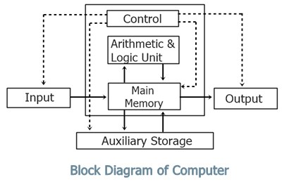

Computer System
Introduction
Computer is an electronic device device derived from the Latin word "computere" which means to calculate. It accepts raw facts and figures as an input which are isolated and interpreted through input device, process it according to the requirement of the user or command supplied by the user, store it before and after processing and produce a meaningful information as an output through an output device. Generally, computer works on IPO (Input-Process-Output) cycle. It follows GIGO (Garbage In Garbage Out) algorithm which means the output is always based on the input supplied by the user. The basic operation of computer is illustrated by following block diagram.

Some characteristics/features of computer
The implementation of computers are not only limited/confined to a small area rather they are used from simple domestic task to complex scientific research to engineering. The use of computer are increasing day-by-day due to some special features or characteristics that computer own. Several features of computer are:
- 1. Accuracy:
- Computer are the accurate machine that means result produced by computer are 100% accurate. Since, it follows GIGO. The error that may arise in output is due to human not by a computer.
- 2. Speed:
- Computer works on tremendously high speed. The operating speed of computer are measured in millisecond, microsecond, picosecond and nanosecond which means computer can perform millions and billions of instruction per second.
- 3. Storage:
- It is the area or unit which is capable of storing data and information for present and future use. Storing data allows users to retrieve it whenever required. These days computer comes with high volume of memory which are measured in Megabyte (1024 KB) , Gigabyte (1024 MB), Terabyte(1024 GB) and Petabyte(1024 TB).
- 4. Versatility:
- Computer are generally design to serve more than one type of work. The implementation of computer are not only limited to specific purpose, they solve general requirement of the user and can be used in more than 1 type of job.
- 5. Diligence:
- The feature of computer in which computer doesn't get tired even after working for long period of time. Computer can perform any number of task continuously until it is accomplished. Once the instruction is given computer follows the command till it gets terminated.
- 6. Automatic:
- Computer is an automatic machine. Once the instruction is generated it perform accordingly until command is terminated. We don't have to issue continuous command in order to operate the computer. This is called automatic.
Applications/Implementations/Uses of computer
The uses of computer are increased day by day. Every aspect if human life is highly influenced by computer. From simple domestic use to complex engineering and scientific solutions, computer can be used. This is due to the versatility of computer. Some of the basic implementation of computer are:
- 1. Education:
- Nowadays, computer are highly used in teaching and learning process. Many interesting graphics can be made and provided for easy learning. Also, computer provide features of internet which make learning easy and fun.
- 2. Communication:
- Computer is massively used in communication. Communication is done by e-mail, chat, online conferencing. e-fax etc with help of internet in computer. It has made the communication faster, easier and cheaper.
- 3. Business:
- In business sector, computer are used to generate invoice, maintain stock and make statistical analysis. E-commerce is the new and emerging way of buying and selling goods and service through used of electronic means and media.
- 4. Engineering and designing:
- Scientific and engineering design requires complex and massive computations. Design of bridges, towers, buildings, generators, motors, electrical transmission etc requires precise computation which are done through computers.
- 5. Science and research
- 6. Military
- 7. Industry
- 8. Medicine
Capabilities and Limitations of computer
| Capabilities | Limitations |
|---|
| 1. Computer is capable of handling larger volume of data and can store huge amount of data. | 1. Computer is a dull machine, it cannot make their decision on their own. |
| 2. Computer requires electricity or battery in order to operate. | 2. Computer requires electricity or battery in order to operate. |
| 3. Computer are used to fulfill the general requirement of user. | 3. It requires several peripheral devices and software to run. |
| 4. It provides faster and cheaper way for communication. | 4. It cannot think, learn or react as human. |
| 5. Computer are used to solve complex and critical situation in which involvement of humans are almost impossible. | 5. It cannot draw conclusion and provide feedback. |
Generations of computer
History of computers dates back to mechanical era where computer were not used for general purpose. It takes long period of time to come to this phase. Development of computer had passed through different era from mechanical to electro mechanical to digital computer. The development in different electronic components, precise engineering and hi-tech technology has change the operation of computer drastically. Earlier computer were only used for specific purpose such as counting and performing basic mathematical operation. Later on, due to the necessity and requirement of user different general purpose computer were developed. Therefore, the classification of computer on the basis of major electronic component, their architecture and modes of operation is known as generations of computer. Five different generations of computer are listed below along with their distinct features.
1. First generations computer (1946-1958 )
- They used vacuum tubes as their basic electronic components used to control and amplify electronic signals.
- They were big in size, consume more electricity and generate large amount of heat thus required air conditioning system to keep device cool.
- They were unreliable and were prone to frequent hardware failure.
- They were normally not used for commercial purpose.
- Machine level language was used to program these computers.
eg: ENIAC, EDVAC, EDSAC, UNIVAC
2. Second generations computer (1959-1964 )
- They used transistors as their basic electronic components.
- They were small in size as compared to first generation thus consume less electricity and generate less heat.
- They were less prone to hardware failure thus more reliable.
- They were not also for commercial purpose because production was difficult and costly.
- Assembly language were used to program these computers.
eg: IBM 7000, IBM 1401, IBM 1620, NCR 304, MARK III, ATLAS
[Note: First computer brought in Nepal was IBM 1401 for population census of 2028 BS]
3. Third generations computer (1965-1974)
- They used Integrated Circuits (IC) as their basic electronic components.
- They were smaller in size, consume less electricity and generate less amount of heat.
- They were faster and more reliable compared to first and second generations.
- They were widely used for the commercial application all over the world.
- High level language were used to program these computers.
eg: PDP-8, PDP-11, ICL 2900 series, IBM 360, IBM 370
4. Fourth generation computer (1975-1990)
- They use VLSI ( Very Large Scale Integrated Circuits ) as their main electronic components.
- There size were drastically reduced and hence were they were much more portable.
- They were faster in processing and were much more reliable.
- They have larger memory up to GB and TB.
- They use different advance high level language to program this computer.
eg: Apple Macintosh, IBM PC
Introduction to computer system
Computer system is a Combination on hardware, software and peripherals which are organized together to run our computer system smoothly. Basically, our computer System works on IPO (Input Process Output) cycle. So, it is mandatory/compulsory to have different unit work together as a whole in order to convert raw facts and figure into meaningful information. Without any one of these unit computer starts malfunctioning.
The design, arrangement, construction or organization a different parts of computer system is known as computer architecture. It is the conceptual design and fundamental operational structure of a computer system. It is a framework which focus in how CPU performs internal operation. So computer architecture may also be define as the science and art of selection, inter connecting hardware components to create computer to meet functional performance and cost.
Components/Elements of Computer System
A Computer System has several have several basic components or elements which are listed below:
- Hardware ( Input, Output, Processing and storage )
- Hardware is the physical devices on the computer which we can touch and see With out hardware, software cannot work it include input device, output device, processing device and storage device for example: device like keyboard, mouse, CPU, hard disk and RAM are commonly used hardware devices.
- Software
- The collection set of instruction is known as program.which performs some specific function. These programs are integrated together in order to work as a software. Software describes how hardware should function and helps in popper utilization and mobilization of computer hardware.For eg. Operating system, MS-Office, Billing software etc.
- Data/Information
- The raw facts and figures that are isolated, uninterpreted, and doesn't give any sense is known as data. Data are fed into the computer for processing as a input though Input devices. Whereas, the meaningful result obtained after processing data according to the supplied instruction is known as information. Information generally are the processed version of data which are obtain as output through output device.
- Procedure
- Procedure are the description of how things are done.It includes steps for converting raw fact and figure into meaningful information. It include the general guidelines of how computer should be used.
- People
- It is the most important part of the computer system. People operate the computer hardware and create the computer software. People helps to generate command to operate the computer system. Without user no hardware and software can be mobilized.
- Communication
- Once the computer system is setup, there is tremendous amount of data flow between user to computer and vice-versa. The data are shared among different components of our computer System in the form of electronic signal. The exchange of data and information between several components can also be termed as communication.
Basic hardware components of a computer system
- Input unit
- Data and instruction must enter the computer system before any computation can be perform on the supply data. Input device accepts data and instruction from the user, hence the device or the unit which is used to fed raw facts and figures to the computer system for processing along with set of instruction is called input unit.
It also converts input data into suitable form that is accepted by the computer System. Generally, it act as a interface/bridge or medium through which communication between user and computer takes place. In short following are the functions performed by the input unit
- It accepts the list of instruction and data from the outside world.
- It converts the supplied instruction and data into computer acceptable form that is binary code.
- It supplies the converted instruction and data to the computer system for further processing.
Some of the commonly used input device are:
Keyboard , track pad, touchscreen, mouse, light pen, scanner, BCR, MICR, OCR, joystick ,trackball etc
- Output Unit
- The job of an output unit is just the reverse of an input unit. It supplies information and result of computation to the outside world. Thus, it links computer with the external environment. It consists of device that translate information processed by the computer into a form that human can understand. The computer processed information consist of Os and 1 which need to be translated into letters, numbers, special symbols, pictures etc that people can understand. In short following are the function performed by an output unit:
- It accepts the result produce by the computer which is not understandable to us.
- It converts the result into human understandable form.
- It supplies the converted results to the outside world.
Commonly used output device are:
Monitor, printers, speakers, plotters etc.
There are two types of output device.
- Hard Copy output
- Soft Copy output
- Hard copy output:
- These type of output are in print form on the paper or some material that can be touched and carried for being shown to other. It is permanent in nature. So that we can look after these output even there is no computer. Unlike soft copy output, these type of output does not need continuous supply of power. for example, Output produce in paper or other material by printer or plotter is known as hard copy output and the device is known as hard copy output device. The commonly used hard copy output devices are printer and plotter.
- Soft copy output:
- Soft copy output refers to the data shown on display screen or produced by speaker. These type output is untouchable. It is temporary in nature that means, output cannot be carried for being shown to others. These types of output resides only when there is computer or continuous electric supply. It is non-portable compared to hard copy output. for example, Output produced on display screen or sound produced from speaker are soft copy output and whereas the device is known as soft copy output device. The commonly used soft copy output devices are speaker and monitor.
- Central Processing Unit:
- he CPU is brain of any computer system. Like in human body, all major decision are taken by the brain Similarly, in computer all major calculation and comparison are made inside the CPU and CPU is also responsible for activating and controlling the operation of other unit of a computer system A micro processor is a single chip that performs the function of CPU in micro-computers. The speed of the microprocessor is measured in terms of Megahertz and Gigahertz. The functions of CPU (processor) are:
- To carry out processing.
- To give command and co-ordinate with all other parts of computer system.
- To control the sequence of operation that takes place in our computer system.
- To helps in memory allocation and controls storage of data and instruction.
The central processing unit consists of smaller units. They are:
- Arithmetic logic Unit (ALU)
- Control Unit (CU)
- Memory Unit (MU)
- ALU:
- ALU stands for Arithmetic Logic Unit. It is one of the most important unit of processing. Where actual execution of the instruction takes place during processing. It performs arithmetic and logical operations and controls speed of those operations as directed by control unit(CU). To be clear all the calculation and decision are made in ALU. The data and instruction are stored in the primary memory before processing, and are transferred when needed to the ALU. ALU is designed to perform fundamental mathematical operations such addition, subtraction, multiplication, division and logical Operation which perform Comparison between the two or more than two operands to make a solid decision also known as logical operation which consists of logical OR, logical AND and logical NOT.
- CU:
- Although, control unit doesn't perform any actual processing on the data , it acts as a central nervous system for other component of the computer. It manages and co-ordinate the entire computer system. It obtain instruction from the program stored in the main memory, interprets the instruction accordingly and issue signal that cause other unit of the system to execute them. Basically, it controls overall operation of the computer. It also controls all other device input/output device connected to the CPU. It directs the movement of electrical signal between main memory to ALU and input-output device. Hence, control unit acts as the nerve system of the computer system.
- MU:
- Memory unit is responsible for storing data and instruction either for short or longer period of time. Basically memory unit stores data and instruction before and after processing . As we know, memory are needed for program being currently used or to store data and instruction permanently . Depending upon the nature of data stored memory unit are distinguished into primary memory and secondary memory. Memory unit of CPU is a primary memory where data and instruction are stored temporarily. Where as the processed data and information can be stored in secondary memory permanently so that user can retrieve information whenever required. There are two types of memory used in our computer system.
- Primary memory/Main memory
- Secondary memory/Auxiliary Memory
- 1. Primary Memory/Main Memory:
- Primary Memory is also known as main memory of computer. This is the place where our data and instruction are stored before processing and the result are stored before displaying output. Memory which stores data and information currently being used by the computer is known as primary memory.
Features of primary memory:
- It is not used to store data permanently.
- It is usually volatile except ROM.
- It is usually expensive and faster than Secondary storage.
- It is normally used for smaller storage.
- It is not used to transfer data from one computer to another compute
- It is made up of semiconducting material.
There are two type of Primary memory.
- 1.1) RAM:
- RAM stands for Random Access Memory, which stores data and instruction temporarily. It is also known as volatile memory that means data and instruction written in RAM gets erased away when electric power is c.ut off. A user can read as read from it and write in it. Hence, it is also known read-write memory. There are two types of RAM.
- SRAM
- It stands for Static Random Access Memory. It is made up of transistors. It is called static because it can remember its memory content without being refreshed or as long as there is power. SRAM doesn't need periodic refreshment like DRAM. It is faster than DRAM but more consume more electricity.
- DRAM
- It stand for Dynamic Random Access Memory. It is made up of capacitors. It is called dynamic because it needs periodic refreshment and can remember its memory content only after being refreshed as long as there is electric charge in a capacitor. It consume less electricity and is less expensive but is slower than SRAM.
- 1.2) ROM:
- ROM stands Read Only Memory where data and information are stored permanently. It is also known as non-volatile memory as data and instruction remain even after there is no power supply. Data are stored in ROM during manufacturing time. The program present in ROM is called firmware and is responsible to boot the computer. The types of ROM are:
- PROM:
- It stands Programmable Read Only Memory. Initially, it is a blank chip which can be written or program only once by using a special machine called ROM burner. Once the PROM is written it cannot be modified and becomes ROM.
- EPROM:
- It stands Erasable Programmable Read Only Memory. It is a special chip which can be reprogrammed to recond different information. The data and information are erased by exposing it to the intensive ultra violet light.
- EEPROM:
- It stands for Electrically Erasable Programmable Read Only Memory. This type of chip can be erased and reprogrammed repeatedly with special electric pulses. It doesn't require special device to write onto it. EEPROM can be re-programmed without removing it from the computer.
- 2. Secondary Memory/Auxiliary Memory:
- Memory which stores data and information permanently for future reference is known as secondary memory. It is a permanent memory where data and instruction remains forever. It is also known as non-volatile memory in which data and instruction remains even if there is no electric supply. This type of memory is also known as auxiliary memory. It has a huge storage capacity up to Gigabytes, Terabytes or even more. Different secondary storage media used are: Magnetic storage, Optical storage and Flash storage.
- 2.1) Magnetic Storage:
- It is a storage media in which data are stored in the form of magnetic spot. A coating of magnetic metal oxide like ferric oxide is done over the disk which attracts the data to be deposited over them. Data are stored in the form of magnetic pattern. Some of the magnetic storage media are: Magnetic tape, Floppy disk and so on.
- Hard disk:
- It is secondary storage device of Computer. It is an air-tight sealed consisting of number of magnetic disk (Platters) mounted on a spindle. It was introduced by IBM in 1956 AD. It was first called Winchester disk.Unlike floppy disk it cannot be bend so it is known as hard disk. It is mainly used to store huge volume of data and programs permanently so it is known as non-volatile memory. The disk is divided into the number of concentric circle called tracks and this tracks is divided into invisible segments called sector.
- Floppy Disk
- It is a round and flat disk made up of Mylar (Plastic material) coated with magnetic material. It is read-write memory as we can read from it as well as write onto it. We can access information from a floppy disk randomly randomly. It has very small storage compare to hard disk.
- 2.2) Optical Storage:
- It is also non-volatile secondary storage media. It is a flat round disk made up of plastic poly carbonate material coated with aluminium alloy. A very fine laser beam is projected to read and write data from and onto the disk. Some commonly used optical storage is CD-ROM, DVD and Blu-Ray (BD). The different types of optical storage are:
- CD-ROM:
- It stands for Compact Disk- Read Only Memory. It is a optical storage media as it use laser beam to access data from the disk. It can store up to 700mb of data and are useful to store large amount data like computer software, audio, video movies etc. Other types of CD-ROM are CD-R and CD-RW.
- DVD:
- DVD stands for digital Digital Versatile Disk or Digital Video Disk. It is also a type of optical memory which can store very large amount of data and information almost six times more than CD. It is also considered as improved form of CD-ROM and use same technology as that of CD-ROM for reading and writing data.
- 2.3) Flash Memory:
- It is a non-volatile. erasable and programmable solid state memory which is made up of Semi- Conductor chip. It was first introduced in mid 1980's by Fujio Masuaka in Toshiba Corporation of Japan It can be re-programmed at high speed and hence the name flash. It is derived from EEPROM. In Flash entire memory can be eased in a few second by using electric technolgy. Examples memory card, pen-drive etc.
Classification of computer on the Basis of Size
As we know, technological development and precise engineering had drastically reduce the size of computers. Development of various electronic components are the major cause for reducing the size of the computer. Different types of computer on the basis of size are:
- 1.Super Computer:
- This computer are one of the fastest and powerful digital computer which can perform only a particular types of jobs such as weather forecasting, rocket launching, population counting etc. They were tremendously huge in size and are very expensive. Due to this reason they are not commercially successful. They are used by large corporations and government agencies. They were large in size hence, it occupy much more space and require temperature controlled room.
- 2.Mainframe Computer:
- This computer are also largest, fastest and perhaps one of the most expensive computer. Super computer are much more powerful and expensive but they are similar in size with mainframe computers. These computers have high processing unit and large storage capacity. This computer have multiple terminal. This computer can do big capacity of processing tasks such as population census, agro census, SLC result processing, governmental offices, industries etc. The first computer bought in Nepal in 2028 BS was IBM 1401, which was also a mainframe computer. This computer was bought in Nepal for population counting. Moreover, second computer bought in Nepal was ICL 2950/10 in 2038 BS which was also a mainframe computer brought for same purpose.
- 3.Mini Computer:
- This computer are smaller than mainframe computer and are more powerful and expensive compare with micro-computer. They use terminal and are connected with more than 50 terminal at a time. Hence, it can handle much more amount of input and output than micro computer. The capability of mini computer is somewhere in between mainframe and micro computer. So, they are often called mid-range computer. This computer are used for medium size business, industries, universities, banks due to easy operation than mainframe computer. Eg, Data general, NECK, MAGNUM
- 4.Micro Computer:
- These are the smallest computer develop till date they use micro-processor as their major processing unit. Hence, they are called micro-computers. This computer are small and low cost digital computer. They are also called home computer or personal computer. This days we can find various micro computer that has various processing speed, storage, capacity and size according to cost. They are normally used in office, home, school, shop etc. Micro Computer are also found in various shape and size. They are desktop, Laptop and palmtop.
- a. Desktop:
- They are the personal computer which use micro-processor as a single chip processing unit normally called CPU whose size are so small that they accommodate in a desk of a user. Desktop also have various range of personal computer having several processing speed, storage, capacity and other features. This computer are out popular computer this days. So that, they are used in various commercial field such as school, home, office, business and so on.
- b. Laptop:
- This computer are highly portable micro computers and can be carried from one place to another easily like briefcase. They are so small that they can be fixed in a lap of a user and hence they are called laptop. They are mostly popular among traveller and the business man. We have to move from one place to another place for work and different reasons. Since, laptop comes with battery backup, we don’t need to have direct A.C. supply. So, we can use without direct connection of electricity. It high reliability, portability and flexibility.
- c. Palmtop/Handheld:
- These are the most portable and smallest device that are develop till date. They are so highly portable that they can be carried easily inside the pocket of the user. Due to small in size they can be adjusted within the palm of the user. So, they are called Palmtop. Several tablets, PDA (Personal Digital Assistant), smartphones are commonly used palmtop these days. This device also gave huge range of application ranging from game playing, internet surfing, and other official needs and requirement. This device also comes with battery backup.
Questions on Computer System
- What are the main components of a computer system and their functions?
- Explain the differences between RAM and ROM.
- Describe the function of input and output devices.
- What are the characteristics of microprocessors?
- How does secondary memory differ from primary memory?
- What role does the bus system play in computer architecture?